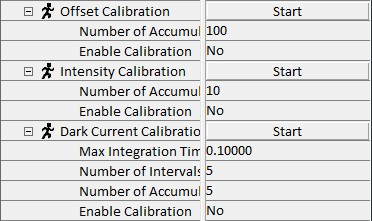
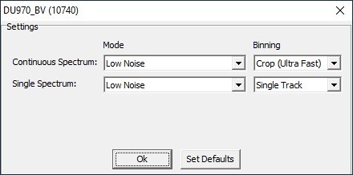

|
光谱相机
|
对于连接到计算机的每个光谱相机，将提供一个"光谱相机 X"参数组。
更多信息：
以下参数仅适用于 InGaAs 相机。

偏移校准
校准程序以 0 s 积分时间且无光照射探测器测量一系列光谱（累积次数可由用户调整）。如果启用，所有测量的光谱现在都减去所采集系列的平均光谱。为了只得到正值，添加了 2000 的偏移。现有的强度和暗电流校准现在无效，因此自动禁用。
强度校准
为了校准每个像素的增益，需要具有平滑分布的光谱。每个像素的增益通过其相邻像素的平均强度计算。算法开始时，会搜索一个给出最大信号 50000 的积分时间。然后以 10 个不同的积分时间测量一系列光谱（累积次数可由用户调整）。从这些数据计算增益查找表。现有的暗电流校准现在无效，因此由软件禁用。
暗电流校准
暗电流校准程序以不同的积分时间获取一系列时间序列。用户可以更改最大积分时间、时间序列数量和累积次数。从这些数据计算每个像素的暗信号率。根据当前积分时间，从测量的光谱中减去暗信号。为获得最佳结果，此校准需要覆盖用于测量的建议积分时间。
开始
此按钮启动校准。仅在偏移校准有效且开启时，强度校准和暗电流校准才可用。对于偏移校准和暗校准，确保没有光照射到相机上。记录的校准保存在内部设置文件夹中。
累积次数
此参数描述将累积多少个光谱。
启用校准
此参数打开或关闭相应的校准。如果校准成功，则自动设置为"是"。
间隔数
间隔数确定在零和最大积分时间之间取多少个不同的积分时间步长。
最大积分时间
此参数定义暗校准的最大积分时间。
仅特殊系统可用：
选项
按下此按钮，打开光谱相机选项对话框。可用选项取决于相机型号，因此并非所有选项都可能在您的情况下可用。

有关所有选项的解释，请参阅 光谱设置。